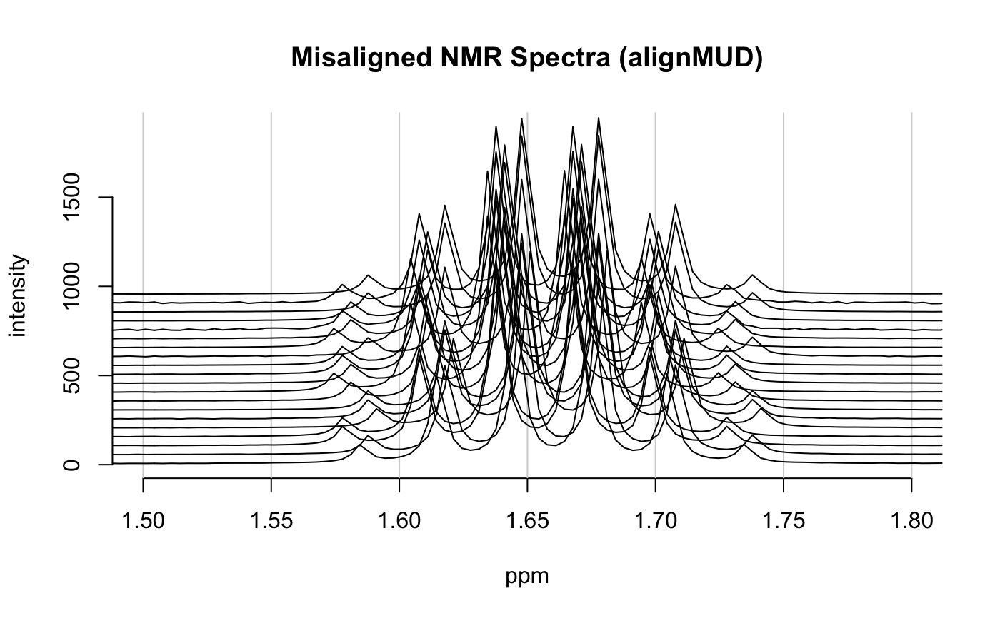

Hierarchical Cluster-Based Peak Alignment on a Spectra Object
Source:R/clupaSpectra.R
clupaSpectra.RdThis function is a wrapper to several functions in the speaq package. It implements the CluPA algorithm described in the reference.
clupaSpectra(spectra, bT = NULL, ...)
Arguments
| spectra | An object of S3 class |
|---|---|
| bT | Numeric. The baseline threshold. Defaults to five percent of the
range of the data, in |
| … | Other arguments to be passed to the underlying functions. |
Value
A modifed Spectra object.
References
Vu TN, Valkenborg D, Smets K, Verwaest KA, Dommisse R, Lemiere F, Verschoren A, Goethals B, Laukens K. "An integrated workflow for robust alignment and simplified quantitative analysis of NMR spectrometry data" BMC Bioinformatics vol. 12 pg. 405 (2011).
https://github.com/bryanhanson/ChemoSpec
Examples
data(alignMUD) plotSpectra(alignMUD, which = 1:20, lab.pos = 4.5, offset = 0.1, yrange = c(0, 1900), amp = 500, xlim = c(1.5, 1.8), main = "Misaligned NMR Spectra (alignMUD)")aMUD <- clupaSpectra(alignMUD)#> [1] "j =1 peak =292 savedpeak = 292" #> [1] "j =2 peak =164 savedpeak = 292" #> [1] "j =5 peak =370 savedpeak = 882" #> [1] "j =6 peak =242 savedpeak = 882" "j =6 peak =367 savedpeak = 1007" #> [1] "j =7 peak =114 savedpeak = 882" "j =7 peak =239 savedpeak = 1007" #> [1] "j =8 peak =111 savedpeak = 1007" "j =8 peak =316 savedpeak = 1212" #> #> Spectrum 1 has 4 peaks[1] "j =1 peak =291 savedpeak = 291" #> [1] "j =2 peak =163 savedpeak = 291" #> [1] "j =5 peak =369 savedpeak = 881" #> [1] "j =6 peak =241 savedpeak = 881" "j =6 peak =357 savedpeak = 997" #> [1] "j =7 peak =113 savedpeak = 881" "j =7 peak =229 savedpeak = 997" #> [1] "j =8 peak =101 savedpeak = 997" "j =8 peak =315 savedpeak = 1211" #> #> Spectrum 2 has 4 peaks[1] "j =1 peak =294 savedpeak = 294" #> [1] "j =2 peak =166 savedpeak = 294" #> [1] "j =5 peak =372 savedpeak = 884" #> [1] "j =6 peak =244 savedpeak = 884" "j =6 peak =360 savedpeak = 1000" #> [1] "j =7 peak =116 savedpeak = 884" "j =7 peak =232 savedpeak = 1000" #> [1] "j =8 peak =104 savedpeak = 1000" "j =8 peak =318 savedpeak = 1214" #> #> Spectrum 3 has 4 peaks[1] "j =1 peak =294 savedpeak = 294" #> [1] "j =2 peak =166 savedpeak = 294" #> [1] "j =5 peak =372 savedpeak = 884" #> [1] "j =6 peak =244 savedpeak = 884" "j =6 peak =369 savedpeak = 1009" #> [1] "j =7 peak =116 savedpeak = 884" "j =7 peak =241 savedpeak = 1009" #> [1] "j =8 peak =113 savedpeak = 1009" "j =8 peak =318 savedpeak = 1214" #> #> Spectrum 4 has 4 peaks[1] "j =1 peak =290 savedpeak = 290" #> [1] "j =2 peak =162 savedpeak = 290" #> [1] "j =5 peak =368 savedpeak = 880" #> [1] "j =6 peak =240 savedpeak = 880" "j =6 peak =365 savedpeak = 1005" #> [1] "j =7 peak =112 savedpeak = 880" "j =7 peak =237 savedpeak = 1005" #> [1] "j =8 peak =109 savedpeak = 1005" "j =8 peak =314 savedpeak = 1210" #> #> Spectrum 5 has 4 peaks[1] "j =1 peak =291 savedpeak = 291" #> [1] "j =2 peak =163 savedpeak = 291" #> [1] "j =5 peak =369 savedpeak = 881" #> [1] "j =6 peak =241 savedpeak = 881" "j =6 peak =366 savedpeak = 1006" #> [1] "j =7 peak =113 savedpeak = 881" "j =7 peak =238 savedpeak = 1006" #> [1] "j =8 peak =110 savedpeak = 1006" "j =8 peak =315 savedpeak = 1211" #> #> Spectrum 6 has 4 peaks[1] "j =1 peak =291 savedpeak = 291" #> [1] "j =2 peak =163 savedpeak = 291" #> [1] "j =5 peak =369 savedpeak = 881" #> [1] "j =6 peak =241 savedpeak = 881" "j =6 peak =366 savedpeak = 1006" #> [1] "j =7 peak =113 savedpeak = 881" "j =7 peak =238 savedpeak = 1006" #> [1] "j =8 peak =110 savedpeak = 1006" "j =8 peak =315 savedpeak = 1211" #> #> Spectrum 7 has 4 peaks[1] "j =1 peak =293 savedpeak = 293" #> [1] "j =2 peak =165 savedpeak = 293" #> [1] "j =5 peak =371 savedpeak = 883" #> [1] "j =6 peak =243 savedpeak = 883" "j =6 peak =368 savedpeak = 1008" #> [1] "j =7 peak =115 savedpeak = 883" "j =7 peak =240 savedpeak = 1008" #> [1] "j =8 peak =112 savedpeak = 1008" "j =8 peak =317 savedpeak = 1213" #> #> Spectrum 8 has 4 peaks[1] "j =1 peak =295 savedpeak = 295" #> [1] "j =2 peak =167 savedpeak = 295" #> [1] "j =5 peak =373 savedpeak = 885" #> [1] "j =6 peak =245 savedpeak = 885" "j =6 peak =370 savedpeak = 1010" #> [1] "j =7 peak =117 savedpeak = 885" "j =7 peak =242 savedpeak = 1010" #> [1] "j =8 peak =114 savedpeak = 1010" "j =8 peak =319 savedpeak = 1215" #> #> Spectrum 9 has 4 peaks[1] "j =1 peak =293 savedpeak = 293" #> [1] "j =2 peak =165 savedpeak = 293" #> [1] "j =5 peak =371 savedpeak = 883" #> [1] "j =6 peak =243 savedpeak = 883" "j =6 peak =359 savedpeak = 999" #> [1] "j =7 peak =115 savedpeak = 883" "j =7 peak =231 savedpeak = 999" #> [1] "j =8 peak =103 savedpeak = 999" "j =8 peak =317 savedpeak = 1213" #> #> Spectrum 10 has 4 peaks[1] "j =1 peak =294 savedpeak = 294" #> [1] "j =2 peak =166 savedpeak = 294" #> [1] "j =5 peak =372 savedpeak = 884" #> [1] "j =6 peak =244 savedpeak = 884" "j =6 peak =369 savedpeak = 1009" #> [1] "j =7 peak =116 savedpeak = 884" "j =7 peak =241 savedpeak = 1009" #> [1] "j =8 peak =113 savedpeak = 1009" "j =8 peak =318 savedpeak = 1214" #> #> Spectrum 11 has 4 peaks[1] "j =1 peak =294 savedpeak = 294" #> [1] "j =2 peak =166 savedpeak = 294" #> [1] "j =5 peak =372 savedpeak = 884" #> [1] "j =6 peak =244 savedpeak = 884" "j =6 peak =369 savedpeak = 1009" #> [1] "j =7 peak =116 savedpeak = 884" "j =7 peak =241 savedpeak = 1009" #> [1] "j =8 peak =113 savedpeak = 1009" "j =8 peak =318 savedpeak = 1214" #> #> Spectrum 12 has 4 peaks[1] "j =1 peak =291 savedpeak = 291" #> [1] "j =2 peak =163 savedpeak = 291" #> [1] "j =5 peak =369 savedpeak = 881" #> [1] "j =6 peak =241 savedpeak = 881" "j =6 peak =366 savedpeak = 1006" #> [1] "j =7 peak =113 savedpeak = 881" "j =7 peak =238 savedpeak = 1006" #> [1] "j =8 peak =110 savedpeak = 1006" "j =8 peak =315 savedpeak = 1211" #> #> Spectrum 13 has 4 peaks[1] "j =1 peak =295 savedpeak = 295" #> [1] "j =2 peak =167 savedpeak = 295" #> [1] "j =5 peak =373 savedpeak = 885" #> [1] "j =6 peak =245 savedpeak = 885" "j =6 peak =361 savedpeak = 1001" #> [1] "j =7 peak =117 savedpeak = 885" "j =7 peak =233 savedpeak = 1001" #> [1] "j =8 peak =105 savedpeak = 1001" "j =8 peak =319 savedpeak = 1215" #> #> Spectrum 14 has 4 peaks[1] "j =1 peak =293 savedpeak = 293" #> [1] "j =2 peak =165 savedpeak = 293" #> [1] "j =5 peak =371 savedpeak = 883" #> [1] "j =6 peak =243 savedpeak = 883" "j =6 peak =368 savedpeak = 1008" #> [1] "j =7 peak =115 savedpeak = 883" "j =7 peak =240 savedpeak = 1008" #> [1] "j =8 peak =112 savedpeak = 1008" "j =8 peak =317 savedpeak = 1213" #> #> Spectrum 15 has 4 peaks[1] "j =1 peak =294 savedpeak = 294" #> [1] "j =2 peak =166 savedpeak = 294" #> [1] "j =5 peak =372 savedpeak = 884" #> [1] "j =6 peak =244 savedpeak = 884" "j =6 peak =360 savedpeak = 1000" #> [1] "j =7 peak =116 savedpeak = 884" "j =7 peak =232 savedpeak = 1000" #> [1] "j =8 peak =104 savedpeak = 1000" "j =8 peak =318 savedpeak = 1214" #> #> Spectrum 16 has 4 peaks[1] "j =1 peak =293 savedpeak = 293" #> [1] "j =2 peak =165 savedpeak = 293" #> [1] "j =5 peak =371 savedpeak = 883" #> [1] "j =6 peak =243 savedpeak = 883" "j =6 peak =368 savedpeak = 1008" #> [1] "j =7 peak =115 savedpeak = 883" "j =7 peak =240 savedpeak = 1008" #> [1] "j =8 peak =112 savedpeak = 1008" "j =8 peak =317 savedpeak = 1213" #> #> Spectrum 17 has 4 peaks[1] "j =1 peak =291 savedpeak = 291" #> [1] "j =2 peak =163 savedpeak = 291" #> [1] "j =5 peak =369 savedpeak = 881" #> [1] "j =6 peak =241 savedpeak = 881" "j =6 peak =366 savedpeak = 1006" #> [1] "j =7 peak =113 savedpeak = 881" "j =7 peak =238 savedpeak = 1006" #> [1] "j =8 peak =110 savedpeak = 1006" "j =8 peak =315 savedpeak = 1211" #> #> Spectrum 18 has 4 peaks[1] "j =1 peak =294 savedpeak = 294" #> [1] "j =2 peak =166 savedpeak = 294" #> [1] "j =5 peak =372 savedpeak = 884" #> [1] "j =6 peak =244 savedpeak = 884" "j =6 peak =369 savedpeak = 1009" #> [1] "j =7 peak =116 savedpeak = 884" "j =7 peak =241 savedpeak = 1009" #> [1] "j =8 peak =113 savedpeak = 1009" "j =8 peak =318 savedpeak = 1214" #> #> Spectrum 19 has 4 peaks[1] "j =1 peak =291 savedpeak = 291" #> [1] "j =2 peak =163 savedpeak = 291" #> [1] "j =5 peak =369 savedpeak = 881" #> [1] "j =6 peak =241 savedpeak = 881" "j =6 peak =357 savedpeak = 997" #> [1] "j =7 peak =113 savedpeak = 881" "j =7 peak =229 savedpeak = 997" #> [1] "j =8 peak =101 savedpeak = 997" "j =8 peak =315 savedpeak = 1211" #> #> Spectrum 20 has 4 peaks #> -------------------------------- #> CluPA will run with maxShift= 100 #> If you want CluPA automatically detect the optimal maxShift, #> let try with dohCluster(...,maxShift=NULL,..) #> -------------------------------- #> #> aligning spectrum 1 #> aligning spectrum 2 #> aligning spectrum 3 #> aligning spectrum 4 #> aligning spectrum 5 #> aligning spectrum 6 #> aligning spectrum 7 #> aligning spectrum 9 #> aligning spectrum 10 #> aligning spectrum 11 #> aligning spectrum 12 #> aligning spectrum 13 #> aligning spectrum 14 #> aligning spectrum 15 #> aligning spectrum 16 #> aligning spectrum 17 #> aligning spectrum 18 #> aligning spectrum 19 #> aligning spectrum 20 #> Median pearson correlation of aligned spectra: 0.9999948 #> Alignment time: 0.001 minutesplotSpectra(aMUD, which = 1:20, lab.pos = 4.5, offset = 0.1, yrange = c(0, 1900), amp = 500, xlim = c(1.5, 1.8), main = "Aligned NMR Spectra (alignMUD)")